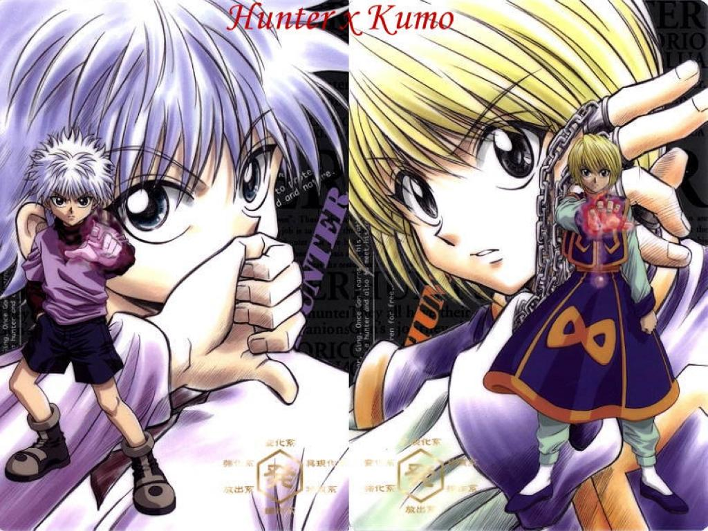
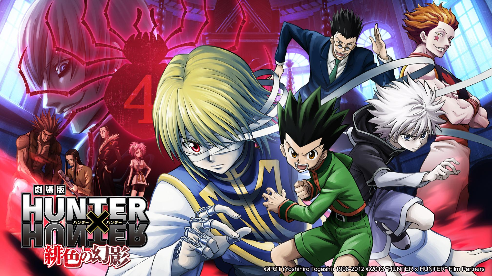
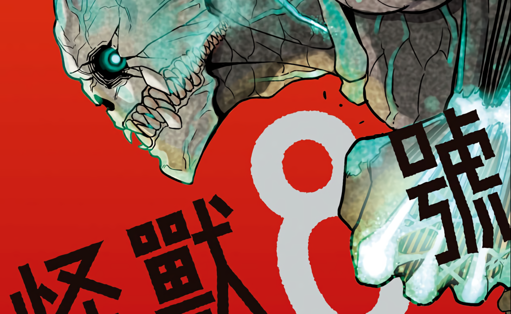
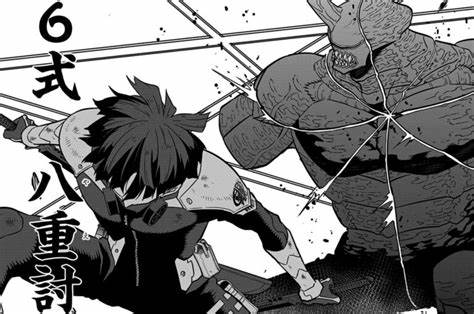

劇情描述一位12歲少年小傑·富力士尋找父親——金·富力士的故事。
自小生長在鯨魚島的小傑小時候因誤入母狐熊的勢力範圍，就快要被攻擊時，一名路過、名叫凱特的男子救了他。
原來凱特是他的父親──金的徒弟，凱特告訴小傑許多關於他的父親及獵人相關的事情，因此小傑對金及獵人這個職業有很大的憧憬。
揍敵客家族篇
小傑、酷拉皮卡和雷歐力皆通過了獵人試驗，為了帶回回到家族的奇犽，三人往奇犽的家出發。三人順利地來到奇犽家門口卻無法進去
原來要進入揍敵客家必須打開沉重的「試煉之門」，否則就會被看門犬視為入侵者後咬死。後來在大門看守人皆卜戎的協助下三人終於
具備開門的能力，往本邸前進。被囚禁在家的奇犽在得知小傑等人已來到家中，在與父親長談後便前往與其會合；雖然奇犽的母親反對
父親這麼做，但奇犽的父親卻意味深長的表示，奇犽總有一天會再回來。在奇犽還未與三人會合的空檔，揍敵客管家梧桐對三人進行「
猜銅板」考驗，並透過此考驗給予小傑忠告。四人再次團聚後，雷歐力為了準備醫學院的考試要離開，奇犽和小傑則一起行動，酷拉皮
卡則在獵人試驗時，從西索口中得知幻影旅團線索與西索約在九月友克鑫市碰面，在那之前準備利用獵人身份開始工作與尋找族人的眼
睛「火紅眼」，四人相約在九月一日友克鑫市見。
友克鑫市篇（幻影旅團篇）
漫畫：No.071～119（單行本8～13卷）；1999年動畫：48～62話、OVA第1期全8話；2011年動畫：41～58話
主角4人再次在友克鑫市相遇。故事世界中最大規模的拍賣會在友克鑫市舉行。小傑、奇犽和雷歐力湧進各種方法籌集資金購買名稱為
「貪婪之島」的遊戲，這是藏有金的線索的遊戲，在過程中也與酷拉皮卡的仇人幻影旅團發生衝突。 最後小傑和奇犽順利得到玩遊戲
的資格，四人再次各自旅程。
-怪獸8號-
故事簡介
日本是怪獸出現率在世界上名列前茅的「怪獸強國」。日比野卡夫卡，32歲，任職怪獸清潔公司，做著怪物屍體清潔工的工作。他在小時候跟兒時好友
亞白米娜約定「一起消滅所有怪獸」。到現在，米娜已經成為日本防衛隊第3部隊的隊長，反觀自己已經放棄加入防衛隊的夢想，過著平庸的生活 卡夫
卡的公司來了個新人——市川雷諾。市川跟以前的卡夫卡一樣，以加入防衛隊為目標。市川告訴卡夫卡，防衛隊招募的年齡限制提升到33歲，換言之，卡
夫卡還有挑戰夢想的機會。此時，他們被怪獸襲擊，危急之際被米娜帶領的第3部隊相救。他們在醫院養傷時，卡夫卡被一隻神秘的生物侵蝕，將他的身
體變成了一隻怪獸──其後被命名為「怪獸8號」。卡夫卡變成的怪獸雖然仍然保有人類的意識，但力量跟怪獸無異。他以怪獸之力救了市民之後，看到自
己跟米娜並肩作戰的願景，決意加入防衛隊。
卡夫卡和雷諾一同參與防衛隊的考核，在那裏遇見天才少女——四之宮琪歌露。琪歌露以她強大的實力消滅考試中的大部份目標怪獸。此時， 理應安全的
考試場地中出現一隻能夠說話的怪獸（後被命名為「怪獸9號」）。牠復活場內所有怪獸，並在離去前留下一隻怪物規模強至6.4的怪獸襲擊落單的琪歌露
。琪歌露快被殺死之際，卡夫卡趕來相救。他冒著怪獸身分被發現的風險而變身成怪獸8號，展現匹敵怪獸等級9.8的史上最強戰力，一拳摧毀對手且化解
危機，卡夫卡也沒有洩露怪獸身分。琪歌露毫不意外地以首名通過考試，雷諾也順利加入防衛隊。卡夫卡雖然沒有通過考試，但被第3部隊副隊長—保科宗
四郎收為自己小隊的候補生。原來保科從卡夫卡身上感到有違和感，決定留他在身邊監察。
保科真的好帥嘎其嘎其